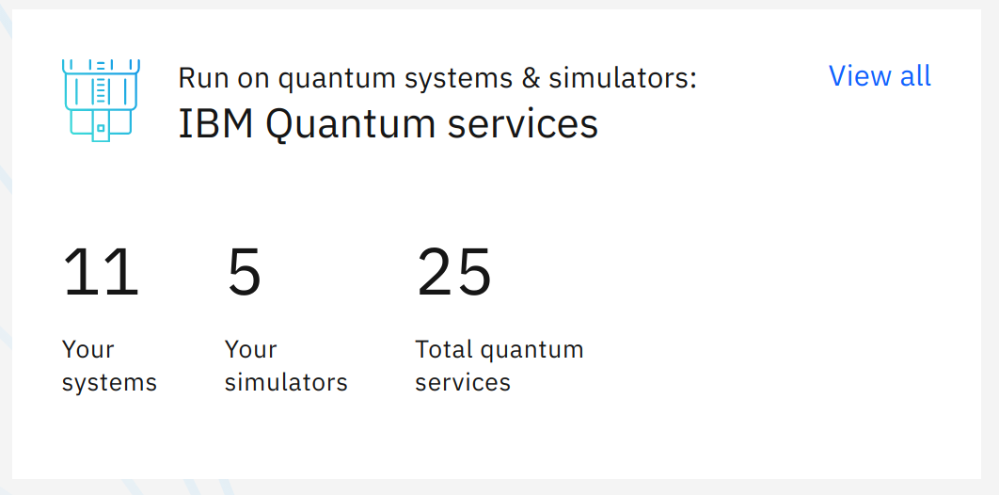
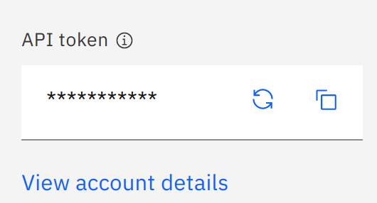

Using IBM quantum Cloud¶
Invitation e-mail¶
As a part of your course, you’ll have education-oriented elevated access right to IBM’s quantum computers. You will receive an e-mail from no-reply@quantum-computing.ibm.com.
You’ll need to create an IBM account with the e-mail address you have received the invitation from, if you don’t have one already.
Please check your mailboxes, (also spam boxes) before contacting your instructors.
IBM Quantum Computing cloud¶
Once you have an IBM ID, go to IBM Quantum
You shall be greeted with a dashboard that looks similar to:

You can see the resources available to you as a part of the lecture in the IBM Quantum services panel
{kind=link}
API token can be used to access IBM Quantum resources from your own computer
{kind=link}
You can use IBM Quantum Composer or IBM Quantum Lab to work directly from your browser.

IBM Quantum Lab¶
You can create a Jupyter notebook (or run one of the hands-on sessions of your coure) in IBM Quantum Lab
In order to run a hands-on session, first download the .ipynb file of the session, then upload to the lab.

Once the upload is complete, the notebook will appear on the right hand side. Here, running the hands-on 1 from the Phys343 is shown.